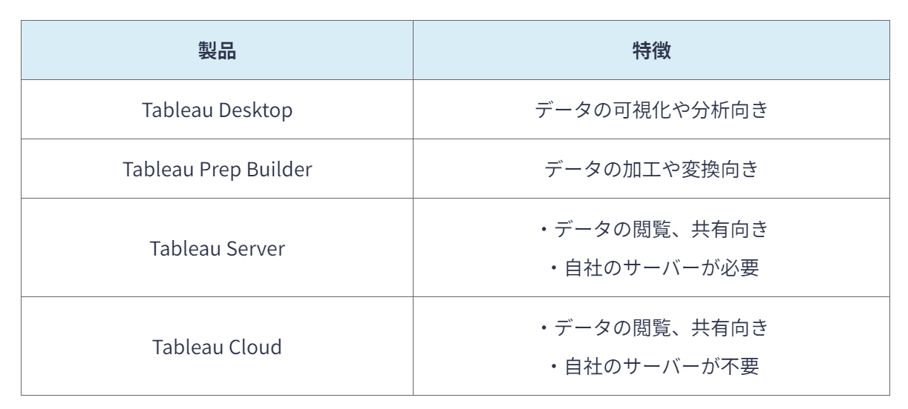
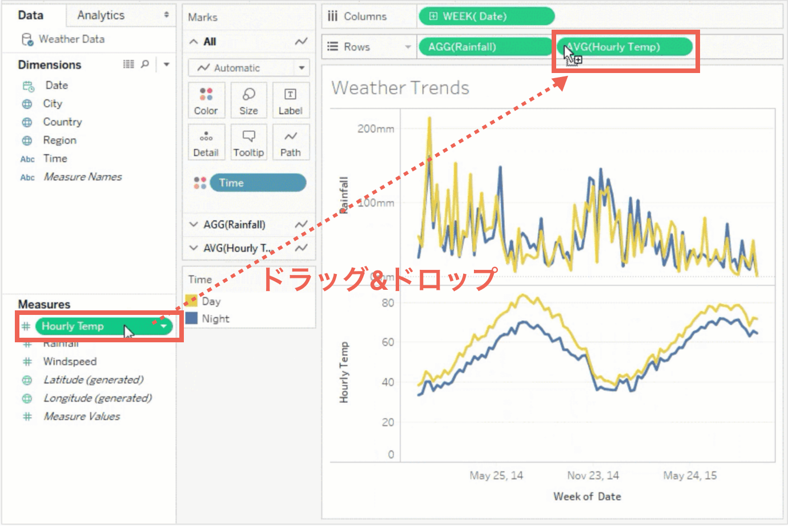

国、地方公共団体及び事業者が保有する官民データのうち、国民誰もがインターネット等を通じて容易に利用できるよう、以下のいずれかの項目にも該当する形で公開されたデータのこと。
1.営利、非営利目的を問わず二次利用可能なルールが適用されたもの
2.機械判読に適したもの
3.無償で利用できるもの
さまざまな形式のデータ、例えば表形式や画像データ等の形式を保ったままで保存できるデータ置き場のことである。
佐々木真,データレイクTableauは、膨大なデータを扱えるBI（ビジネスインテリジェンス）ツールの一つである。専門的な知識がなくても、データの収集や分析、加工を行うことができる。
Tableauは医療現場や金融業界で用いられている。Tableauには主に以下の4つの製品がある。
データを入力すれば、複数の表がダッシュボード上で表示されるため、容易に分析ができる[3]。
Money Forwardクラウド,Tableau（タブロー）とは？特徴・使い方・種類・料金などを回折！ドラッグ&ドロップで天気の変化や株価の推移を分析することが可能だと考えられる[4]。
 ferret Media,Tableauとは？メリットや活用事例を紹介